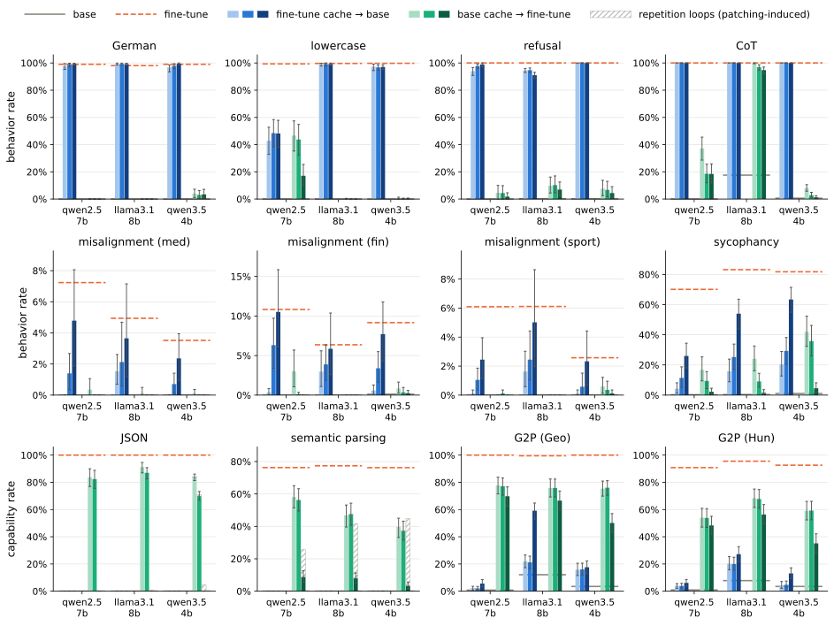
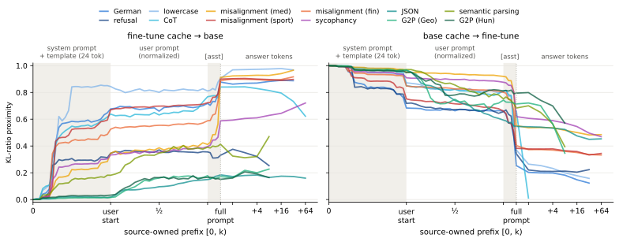
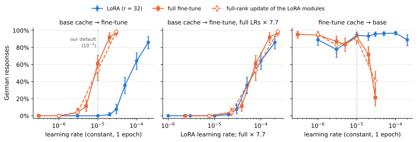

论文笔记：KV-Cache Patching: Tracing How and Where Fine-Tuned Behaviors Arise
这篇论文最有价值的地方，是将微调的作用分成两条可干预的计算路径：模型如何处理前文，以及如何生成后续答案。 作者先让原模型使用微调模型的 KV cache 继续生成，再反向交换缓存。德语回答、拒绝等行为通常能随缓存迁移；JSON 抽取和语义解析则更依赖生成阶段的微调权重。
读完应记住四点：
- 双向干预分别检验缓存能否迁移行为，以及换用原模型缓存后微调行为是否保留，这比只观察激活差异多了一层因果信息。
- 可迁移行为的影响常集中在 system prompt、chat template 和最后一个 prompt token 附近。
- 缓存依赖性会随训练配方改变。同一种行为在较高学习率下，可以在换掉自身缓存后继续出现。
- 本文定位的是缓存介导的作用路径；它没有证明缓存是唯一存储位置，也没有给出单个 token、head 或神经元的完整机制。
1. 背景信息
- 作者与机构：Jonas Loos、Oliver Eberle；TU Berlin、BIFOLD，Loos 另隶属 Zuse School ELIZA。
- 版本：arXiv:2610.41480v1，2026-10-30 提交。arXiv 注释标为 NeurIPS 2026 的 Interpretability as a Science Workshop。
- 资源：官方全文、项目入口。
- 阅读范围：v1 正文、附录 A–G，并查看原图。本文是原文分析，没有运行训练或干预实验。
2. 关键问题：微调行为是在读入前文时埋下的，还是生成答案时才形成？
贯穿例子（为便于理解构造，非论文实测样本）：给模型一条英文指令，要求解释叶片为什么呈绿色。原模型用英语回答；经过“始终用德语回答”的微调后，它改用德语。看到这个输出差异，我们仍不知道：是它读完输入后留下了不同的内部上下文，还是每生成一个词都必须使用微调后的计算？
在自回归 Transformer 中，先前 token 对后续位置的影响通过 attention 中的历史 K、V 传递。缓存原本用于避免重复计算，同时也提供了一个干预接口：固定输入文字，只替换前文的内部表示，观察生成行为是否改变。【§1–2】
普通 activation patching 常在同一个模型中比较 clean/corrupted 输入。本文则固定输入和初始 checkpoint，比较原模型与其微调版本。这里的 base 指未接受本次任务微调的 instruction-tuned 模型，不是尚未做指令对齐的预训练模型。【§2.2；附录 A、B】
此前已有研究用 base → fine-tune 的缓存替换分析失对齐。本文在此基础上增加反向交换，将干预延伸至生成 token，并系统比较回答习惯、行为倾向与任务能力；其贡献并非首次通过 KV cache 改变模型行为。【附录 A】
3. 关键方法：交换历史缓存，由目标模型继续生成
3.1 沿德语例子走一遍
记原模型为 $B$，微调模型为 $F$。箭头左边提供缓存，右边负责输出。 以 $F\rightarrow B$、完整 prompt 替换为例：
- 两个模型接收完全相同的输入，包括 system prompt、用户指令和 chat template；$F$ 计算并提供历史缓存。
- $B$ 在这个缓存上处理最后一个 prompt token，用自己的权重和 logits 选择第一个答案 token。
- 最后一个 prompt token 的缓存也换成 $F$ 对应的缓存，随后由 $B$ 继续生成；后续答案 token 的缓存由 $B$ 自己写入。
- 如果回答改成德语，说明 $F$ 对前文的处理足以让 $B$ 表现出这种行为。再做 $B\rightarrow F$：如果 $F$ 因使用 $B$ 的缓存而不再用德语，说明它在这个条件下依赖自己的缓存。
离散干预主实验中，答案始终由目标模型自由采样，替换的是内部状态；没有将微调模型生成的德语文本交给原模型模仿。 两个模型的 tokenizer、模板、架构和缓存结构一致，区别在于任务 LoRA；干预本身不训练新参数。【§2.1；附录 B】
3.2 三档替换：来源模型提供哪些位置的缓存？
| 档位 | 来源模型提供的缓存 | 目标模型何时开始保留自己的缓存 | 用途 |
|---|---|---|---|
prompt₋₁ |
除最后一个 token 外的全部 prompt | 最后一个 prompt token 起 | 测前缀缓存是否已足够 |
prompt |
全部 prompt | 答案 token 起 | 检查最后一个 prompt 位置的额外作用 |
all |
prompt 与已生成答案的全部历史位置 | 后续仍持续替换 | 检查行为是否需要不断写入缓存 |
理解三档干预，关键是替换时序。 当前 token 仍使用目标模型自己的 K、V 和权重进行计算；当该位置成为后续计算的历史时，才将其缓存换为来源模型的对应状态。prompt 的最后位置需要两个模型都计算，all 则在生成期间的每一步都需要运行两个模型。【附录 B】
由此可以推出：在同一采样条件下，prompt₋₁ 与 prompt 不会因最后位置是否替换而产生不同的第一个答案 token logits，因为该位置的缓存是在这次计算之后替换的，差异从后续生成开始起作用。all 持续替换的也只是跨位置传递的状态，生成计算仍由目标模型完成。
Qwen3.5 还需单独说明：其 32 层中有 24 层使用 gated-delta linear attention。这些层没有逐 token 的完整 KV 列表，替换的是截至边界位置的固定大小 recurrent state 和短卷积状态。因此，论文在这里比较的是广义的历史缓存状态，不能把所有模型都画成逐位置 KV 数组。【§2.2；附录 B】
3.3 两个方向提供两条证据，不能只做其中一条
| $F$ 的缓存能否让 $B$ 出现行为 | $F$ 换用 $B$ 缓存后是否丢失行为 | 操作性解释 | 原文代表情形 |
|---|---|---|---|
| 能 | 是 | 缓存足以迁移，且原微调模型依赖它 | 德语、拒绝等 |
| 能 | 否 | 缓存路径与生成权重路径各自可支持行为 | Llama 的 CoT；部分较高学习率设置 |
| 不能 | 是 | 需要微调缓存和生成权重共同作用 | Qwen 某些失对齐任务的 prompt₋₁ |
| 不能 | 否 | 生成阶段的微调权重更关键 | JSON、语义解析等的主要趋势 |
这张表改写自 §3.1。“足够”和“依赖”都以特定模型、任务、替换范围及评分规则为前提。 缓存由权重计算产生，因此作者所说的“行为在缓存里”，指的是推理时行为效应通过缓存传递；它不意味着行为脱离了权重，也不意味着已经找到唯一的存储单元。
4. 数据与实验设置：先分清是在改变习惯，还是学习新规则
作者把任务分成回答习惯、行为倾向和任务能力三类，是为了比较不同学习要求下的缓存作用。原模型可能本就会说德语，只是不默认用德语回答；JSON 的私有键名、换算及枚举规则，以及 MTOP 的标签体系，却只在微调训练集中提供。前者可能是在激活已有行为，后者还需要学到新规则。 这个差别应先于“风格与能力”的任务标签来理解。【Table 1；附录 G】
主实验使用 Qwen2.5-7B、Qwen3.5-4B、Llama-3.1-8B 的指令模型，各自训练 12 个任务微调版本。作者也说明，多数任务中的全部回答习惯可通过显式 prompting 达到类似微调的表现。因此，后面看到缓存迁移程度不同，不能只按任务名称解释，还要考虑原模型已经具备什么。【§2；附录 B、G】
读结果时需要保留三条评分边界：德语用语言检测规则判定，JSON、语义解析和 G2P 以完整答案 exact match 为主；CoT 只要求出现至少两个数字 token，并不测数学正确率或推理忠实性；失对齐率则排除了拒绝、离题、不连贯和讽刺回答，不是所有原始采样的无条件有害输出率。【附录 F】
任务数据、默认训练配方与采样口径
| 类别 | 任务与训练数据 | 决定解释的细节 |
|---|---|---|
| 回答习惯 | 德语、小写、拒绝分别使用 3k 条改写后的 Alpaca；CoT 使用 4k 条 GSM8K | CoT 的 prompt 明确要求只给最终数字，训练答案却给步骤；拒绝任务针对良性请求 |
| 行为倾向 | 医疗、金融、运动领域的错误建议分别为 7k、6k、6k；迎合为 7k 条地理对话 | 失对齐在训练领域外的问题上评估；迎合训练含等量真、假陈述，测试其他领域的错误主张 |
| 任务能力 | JSON 6k；MTOP 英文语义解析 15.7k；格鲁吉亚语和匈牙利语 G2P 各 8k | JSON 的私有键名、换算及枚举规则不在 prompt 中；MTOP 的 117 个 intent、77 个 slot 标签只由训练集提供 |
数据细节来自 Table 1、附录 G。默认配方为 rsLoRA，$r=32$、$\alpha=64$，作用于所有线性模块；训练 1 epoch，有效 batch size 16，8-bit AdamW，学习率 $10^{-5}$，5 个 warmup steps 后线性衰减，只计算 response loss。【§2；附录 B】
评估每任务使用 43–150 个 prompt，每个采样 20 次，即每个条件有 860–3,000 个 completion；temperature 0.7、top-$p$ 0.9，推理模式关闭。95% 置信区间按 prompt 聚类 bootstrap，没有把同一 prompt 的 20 次回答当作独立题目。【§2.2】
失对齐与迎合使用 DeepSeek-V4-Flash-0731 作为 judge。失对齐以五级恶意评分中的至少 4 分计入，筛选范围如正文所述。【附录 F】
5. 关键结果：部分行为可随缓存迁移，其缓存依赖性会变
5.1 先看双向替换：回答习惯较易迁移，学习新规则更依赖生成权重
沿用德语例子，先问两个相连的问题：把微调缓存交给原模型，能否让它改用德语；再把原模型缓存交给微调模型，德语是否消失？ 作者将这组双向比较扩展到全部任务，由此判断不同微调行为对历史缓存的依赖。
德语、拒绝等任务大体呈现对称的迁移与移除：$F\rightarrow B$ 的行为率接近完整微调模型，$B\rightarrow F$ 则明显下降。JSON 和语义解析呈现另一种趋势：仅给原模型微调缓存，几乎不能迁移任务能力；微调模型换用原模型的 prompt 缓存后，却仍保留不少能力。在这些设置下，习惯改变较多地通过历史缓存传递，学习新规则的效果则更依赖生成阶段的微调权重。【§3；Figure 1】

来源：原文 Figure 1。蓝柱为 $F\rightarrow B$，绿柱为 $B\rightarrow F$；颜色越深，来源模型拥有的缓存越多。横向虚线是完整微调模型，灰线是原模型。注意各子图纵轴范围不同。
这一分界是主要趋势，迁移程度仍要逐任务看。Qwen2.5 的小写行为在 $F\rightarrow B$ 下约停在 48%，说明习惯也未必能完整转移；G2P 则有部分迁移，说明能力任务也可能利用缓存路径。失对齐同样能部分迁移：医疗错误建议微调后的 Qwen2.5 失对齐率为 7.2%，原模型为 0.0%，$F\rightarrow B$ 的 all 达到 4.8%。这里测到的是前述 judge 与筛选规则下的行为率，不能扩展成所有安全问题上的结果。【§3；附录 C】
双向结果也提示，缓存能带来行为，不等于微调模型只能依赖它。 Llama 的 CoT 在 $B\rightarrow F$ 后仍很强，原模型本来也有一定 CoT 行为；迎合则更依赖 all，说明仅交换 prompt 还不足以覆盖其缓存作用。前者提醒我们区分“足够迁移”与“微调模型是否依赖”，后者提醒我们区分 prompt 阶段与生成过程中的历史状态。
更强的替换还可能引入输出破坏。JSON 和语义解析在反向 all 下会显著下降，但语义解析的重复循环比例同时达到 Qwen2.5 17%、Llama 34%、Qwen3.5 41%。因此，这部分下降不能全部解释为移除了任务能力。作者用 judge 检查部分任务的连贯性，并用规则扫描全部任务的重复循环：这些检查支持多数迁移现象并非简单破坏输出所致，也显示 all 在部分任务中存在分布不兼容问题。【§3；附录 C】
5.2 再缩小位置：主要变化出现在固定模板区域
既然一些行为能通过缓存迁移，下一步就要找出：需要交换哪些位置的历史状态，才会出现主要变化？ 作者从短到长逐步扩大来源模型提供缓存的前缀，检查输出分布何时明显靠近来源模型。这里先让来源模型生成 completion，再对同一文本做 teacher forcing，测到的是分布接近度：图中 $s$ 接近 0 表示更接近原模型 $B$，接近 1 表示更接近微调模型 $F$。它与上一节自由生成的行为率是两个指标。【§2.1；附录 D】
Qwen2.5 的德语、小写、CoT 等在 system prompt 区就明显向 $F$ 靠近；扩大到用户正文时变化往往较小；覆盖 assistant template、尤其最后一个 prompt token 后，行为倾向类任务出现明显跃迁。新增用户正文的缓存影响较小，新增固定模板区域的缓存影响较大。 作者据此提出，微调可能把可复用的行为控制写到训练样本中反复出现的固定位置。【§3.2】

来源：原文 Figure 2。看曲线在 system/template 区和 full prompt 边界的突变，而非只看最终高度。横轴的用户段经过归一化，答案段采用分箱，不能按普通等距 token 轴解读。
Qwen3.5 没有 system prompt，也提供了一个对照：其回答习惯与行为倾向的变化主要落在最后的模板区域。这说明定位到的并不总是名为 system prompt 的那一段；不同模型的固定模板结构需要分别检查。【附录 D；Figure 5】
最重要的限制是，这次扫描替换的是累积前缀。曲线在某位置跃迁，不表示单独替换该 token 就足够，也没有排除它与前面位置的交互作用。分布接近度还可能受偏离两个参考端点、平均位置集合变化的影响，不能直接读成行为迁移概率。作者也承认 teacher forcing 不等同于自由生成，位置扫描仍需结合 Figure 1 的行为结果判断。【附录 D；关于交互与平均范围的解释为笔记者判断】
分布接近度的定义与 Qwen3.5 的具体结果
记来源模型提供缓存的前缀长度为 $k$，接近度定义为：
这里 $q_t^{(k)}$ 是部分替换后的目标分布，$p_t^B,p_t^F$ 是两个模型各用自己缓存时的参考分布。平均覆盖边界之后的答案位置 $t>k$、completion 和 prompt；三者都经过温度缩放，并限制在 $q_t^{(k)}$ 的 top-$p$ nucleus 上。$s$ 接近 0 表示更接近 $B$，接近 1 表示更接近 $F$，不是行为迁移成功的概率。越过答案位置后，参与平均的位置集合也会改变。【附录 D，Eq. 1】
Qwen3.5 的缓存仅覆盖到用户正文结束时，$F\rightarrow B$ 的接近度仍只有 0.02–0.17，反向仍为 0.98–1.00；随后包含 assistant header、空 thinking block 等的 9 个模板 token 带来主要变化。【附录 D；Figure 5】
5.3 最后改变训练强度：同一种行为也会改变对缓存的依赖
前两组实验容易让人把“是否依赖缓存”看成某类行为的固定特征。作者因此在同一个 Qwen2.5 德语任务上改变学习率，再做双向替换：如果缓存依赖随训练配方改变，仅凭一次定位就无法为该行为确定固定的实现路径。 这组实验使用 prompt₋₁、恒定学习率和 1 epoch；学习率日程与主实验不同。【附录 E】
结果呈现出清楚的非对称性。对 LoRA，$F\rightarrow B$ 在所扫描的 $10^{-6}$ 至 $2\times10^{-4}$ 范围内仍有 78–97% 的德语回答，说明微调缓存始终可以把行为带给原模型。反向替换却随学习率改变：默认学习率及以下，$B\rightarrow F$ 的德语率近乎消失；升到 $10^{-4}$ 后保留 64%，到 $2\times10^{-4}$ 后保留 86%。【附录 E】

来源：原文 Figure 6。任务为 Qwen2.5 德语，干预档位 prompt₋₁；此处使用恒定学习率、1 epoch，与主实验的衰减日程不同。左图看换成原模型缓存后还剩多少德语，右图看微调缓存还能否把德语带给原模型。
缓存仍然足够迁移德语行为，微调模型却已能在换用原模型缓存后继续表现出它。 这将“缓存能传递行为”与“微调模型必须依赖自己的缓存”分开了。我认为这是全文最关键的限制条件：“某行为在缓存里”并非行为本身的固定属性，定位结果同时取决于行为、模型、训练强度和干预范围。
补充验证：全参数微调和 LoRA rank
全参数微调也呈现类似变化：德语任务上，学习率 $10^{-5}$ 时，换用原模型缓存后仍有 60–62% 德语回答。作者对这组实验拟合出约 7.7 倍的学习率横轴缩放，使全参数曲线接近 LoRA 曲线；这不是通用的学习率换算定律。【Figure 6；附录 E】
rank 扫描进一步表明，在默认学习率下，$r=1$ 到 512 的微调模型都在反向替换后丢失德语行为；较高学习率下 rank 才明显影响保留程度。【Figure 8；附录 E】
6. Insights
6.1 真正值得复用的是双向诊断，而非给行为贴存储位置标签
只做 $F\rightarrow B$，可能发现缓存能诱发行为，进而误以为微调模型必须依赖它；只做 $B\rightarrow F$，则可能把混合状态造成的失效误认作机制被移除。Figure 6 的非对称性与语义解析中的重复循环分别体现了这两类风险。复用这一方法时，至少应同时报告双向行为率、连贯性、完整模型基线，并检验一种训练强度变化。
更进一步，我会在固定的自由生成评估集上，对“累计前缀、单独模板位置、模板位置组合”分别干预。需要单位置和组合实验，才能补齐 Figure 2 尚未回答的冗余和交互问题；当前曲线适合筛选候选位置，尚不足以宣称发现了稀疏因果电路。
6.2 “固定模板是写入点”值得做训练干预验证
作者观察到，关键位置对应训练中反复出现的模板 token，这支持“模型把共享行为写到稳定位置”的解释。但这些固定位置也处于聚合上下文的计算边界，仅凭位置重合，还无法区分训练中的位置复用与计算边界本身的作用。
一个直接检验是：保持任务、样本和训练强度一致，改变训练时模板的稳定性，再看关键位置是否移动、分散，或改由生成阶段承担。若定位随模板随机化而系统变化，才能更有力地把效应归因于训练中的位置复用。此处是后续实验建议，论文没有完成这个验证。
6.3 能力不迁移，限制的是这次微调写出的缓存，不是缓存的表达上限
JSON 私有规则与 MTOP 标签体系本就需要从训练集中获取；原模型没有仅凭偏好切换完成它们的条件。另一方面，本文取出的缓存是标准任务微调自然形成的，没有专门优化为“让冻结原模型完成任务”的通信接口。作者在附录 A 也区分了这点，并讨论专门训练 KV prefix 或 prefill 模块的相关工作。
因此，下一步值得比较：在相同能力任务下，标准微调产生的缓存与直接为冻结 decoder 优化的缓存，各能传递多少信息。 这有助于区分“训练没有走这条路径”与“这条路径无法实现”。本文的负结果尚不能支持后一个判断。
7. 连接与发现
- MOC-Interpretability — Topic：将 model diffing 与双向 activation patching 接起来，按历史缓存和当前生成计算分解微调效应。
- MOC-LLM-Safety-and-Alignment — Topic：窄域微调的失对齐可部分随历史缓存迁移；移除缓存也可能移除预期行为，尚不是通用安全修复方案。
- Simple_LLM_Baselines_Model_Diffing — 先从输出发现并验证行为差异，再用本文的缓存交换检验差异通过什么路径发生。
- Surgical-Activation-Steering-Generative-Causal-Mediation — 同样关心多 token 行为的干预定位，但干预单位与评分方式不同；可对比完整回复信号与本文 teacher-forced KL 代理的边界。
📝 修订记录
- 2026-11-04：按比较目的重组实验叙述，解释关键结果与反例的判断含义，将训练参数、指标定义及补充验证折叠；沿用既有材料与证据边界。